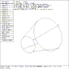

 Figure (ped-tgc): Typical TGC During Parameter Editing
The TGC general class of solids includes all the cylindrical COMGEOM solids. The defining parameters of the TGC are two base vectors (A and B), a height vector (H), two top vectors (C and D), and the vertex (V). The top vectors C and D are directed the same as the base vectors A and B respectively, hence the top vectors are defined only by their lengths (c and d). During solid editing, only vectors A and B are labeled on the display. Figure (ped-tgc) depicts a typical TGC during parameter editing.
It is possible to change the length of the H, A, B, C, or D vectors, resulting in a change in height or eccentricity of the end plates. The overall size of the A,B or C,D end plates can be adjusted, or the size of both can be changed together, leaving only the H vector constant. The H vector or the base plate (AXB) can be rotated. Recall that vectors A &C and vectors B &D have like directions, hence rotating the base (AXC) will automatically rotate the top (BXD). Finally, one can move the end of the height vector H with the TGC becoming or remaining a right cylinder (move end H (rt)), or with the orientation of the base (and top) unchanged (move end H). Either the mouse/tablet or the p command can be used. These functions are selected from the menu which can be seen in Figure (ped-tgc) .
{kind=link}